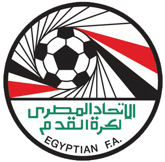
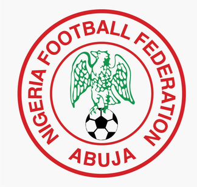
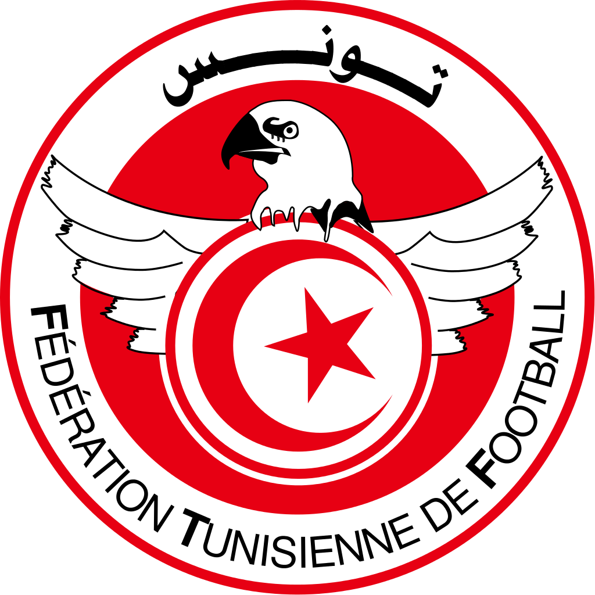

.......
Algeria is a country that was part of france till 1965 or so and didnt make a world cup qualification till 1982 and 19986 which they were knocked out in both at the group stage. They didnt qualify till 2010 and 2014 and in 2014 they managed to reach the quarter finals, their best performance in history.
Cameroon have qualified for seven world cups. They withdrew from the 1966 world cup and their highest position came in 1990, their second world cup. They qualified for four consecutive world cups. They have won the most African Cup of Nations. Their best performance in history.
Egypt have qalified for two world cups in their history 1934 and 1990 and have never passed the group stage, for a team that has been playing football since 1934 they have failed to prove theirselves.
Nigeria got their indipendence in 1960 and have qualified for five world-cups out of thirteen and they have only gotten as high as the round of 16, a feat they have achieved three times including the most recent world cup.
South Africa have qualified for three world-cups and are the only african nation to host the event which was in 2010. They didn't enter till 1966 and they weren't admitted in 1966 and were banned from 1970 to 1990 and failed to qualify in 1994 and 2006 ad 2014.
Ghana have qualified in 3 world cups and have reached the quarter finals once and that was in 2010 in south africa. They have been present in the last three world cups and are the best team in africa and as well as cameroon have reached the highest point of an african team.
Tunisia have qualified for 4 world cups but have failed to make it past the group stage and havent made it in the last two world-cups. They are seen mostly as an average team with a few talented players. They have 2018 to prove themselves in world football.